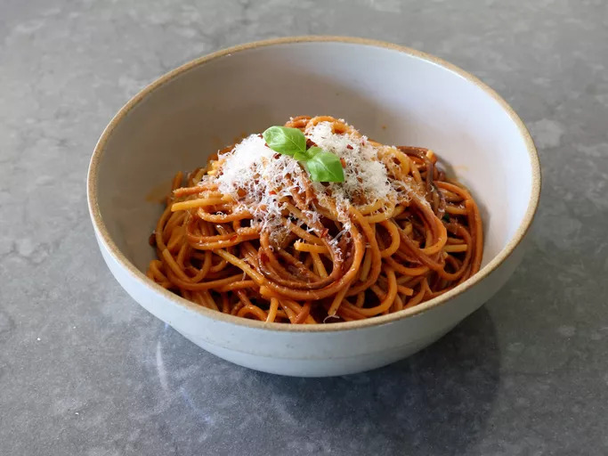

Спагетти на гриле

Описание
Спагетти на гриле готовятся непосредственно в очень простом соусе, так что весь дополнительный вкус от поджаривания сухой пасты на гриле остается в соусе. Это вкусно само по себе в качестве гарнира или как основа для других блюд на гриле, таких как баклажаны или курица.
Ингредиенты
- 8 унций толстых сухих спагетти
- 3 столовые ложки оливкового масла
- 3 зубчика чеснока , тонко нарезанных
- 2 столовые ложки томатной пасты с горкой
- 3 3/4 стакана куриного бульона , плюс еще по мере необходимости
- 1 чайная ложка соли или по вкусу, в зависимости от уровня соли в бульоне
- 2 столовые ложки несоленого масла
- 1/4 стакана листьев базилика , порванных на мелкие кусочки
- 1/4 стакана мелко натертого пармезана или по вкусу
- 1 щепотка красного перца чили (по желанию)
Шаги
- Подготовьте уличный угольный гриль для жарки на среднем или сильном огне.
- Положите сухие спагетти на раскаленный угольный гриль и готовьте, часто помешивая щипцами, пока макароны не поджарятся до светло-коричневого цвета, около 4 минут. Снимите и отложите в сторону.
- Добавьте оливковое масло в сковороду и поставьте на средний огонь. Добавьте чеснок и обжаривайте до появления аромата, от 30 секунд до 1 минуты. Добавьте томатную пасту и обжаривайте около 1 минуты; влейте бульо
- Увеличьте огонь до среднего и доведите бульон до кипения. Добавьте соль и спагетти на гриле, и щипцами передвигайте спагетти вперед и назад, пока они не станут достаточно мягкими, чтобы покрыться бульоном.
- Готовьте, помешивая, пока спагетти не станут настолько мягкими, насколько вам нравится; это займет на несколько минут больше, чем указано в инструкции на упаковке. Если кастрюля станет слишком сухой, добавьте еще немного бульона.
- Уменьшите огонь до минимума; добавьте масло и базилик. Выключите огонь и добавьте сыр. Подавайте немедленно.